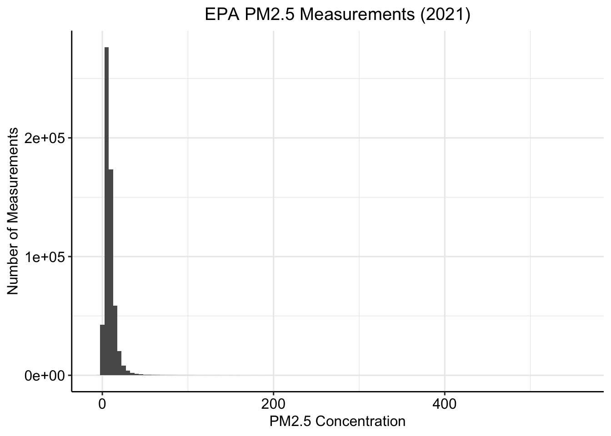
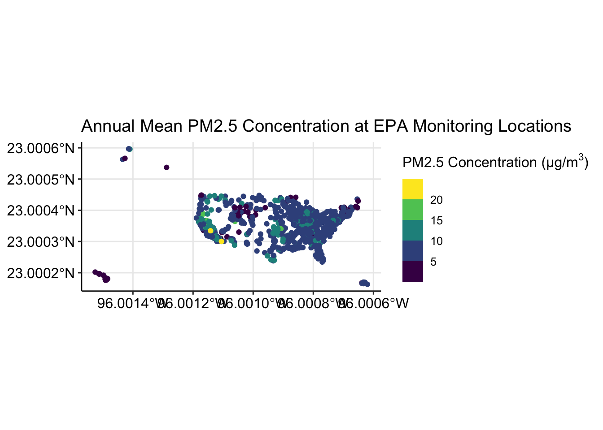
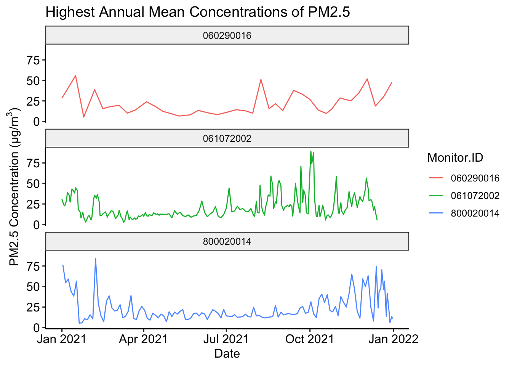
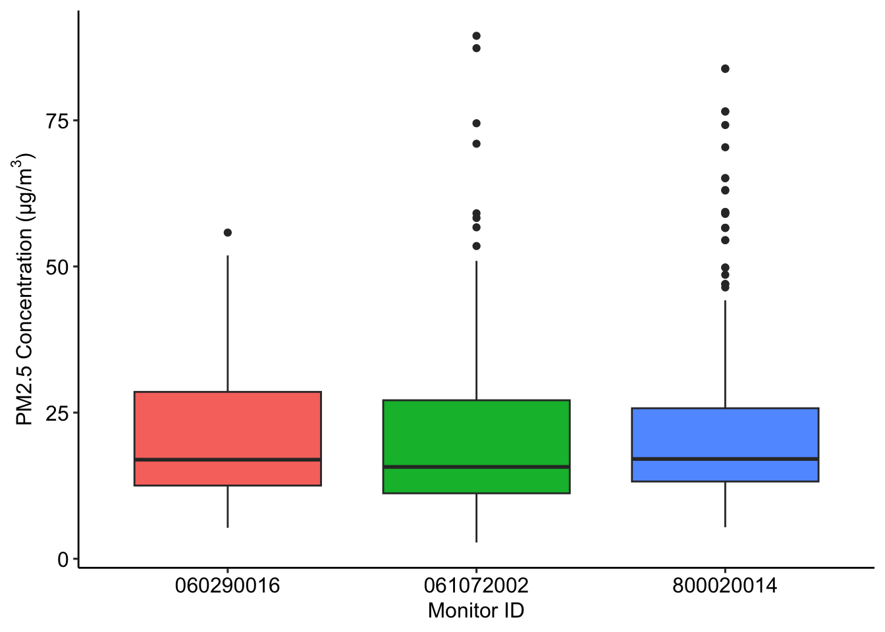
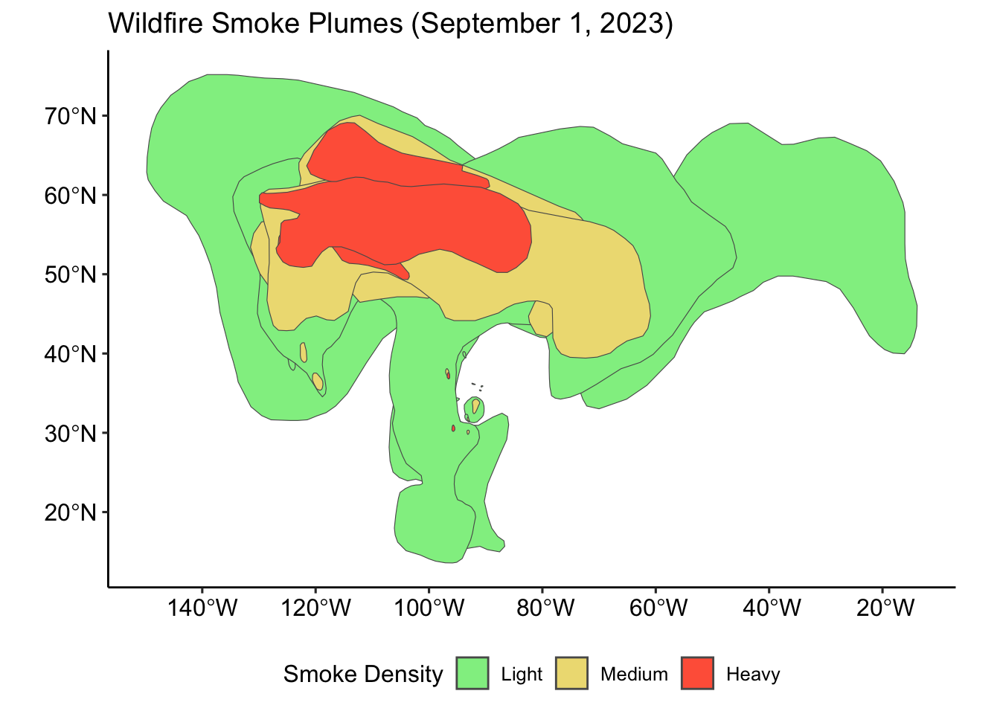
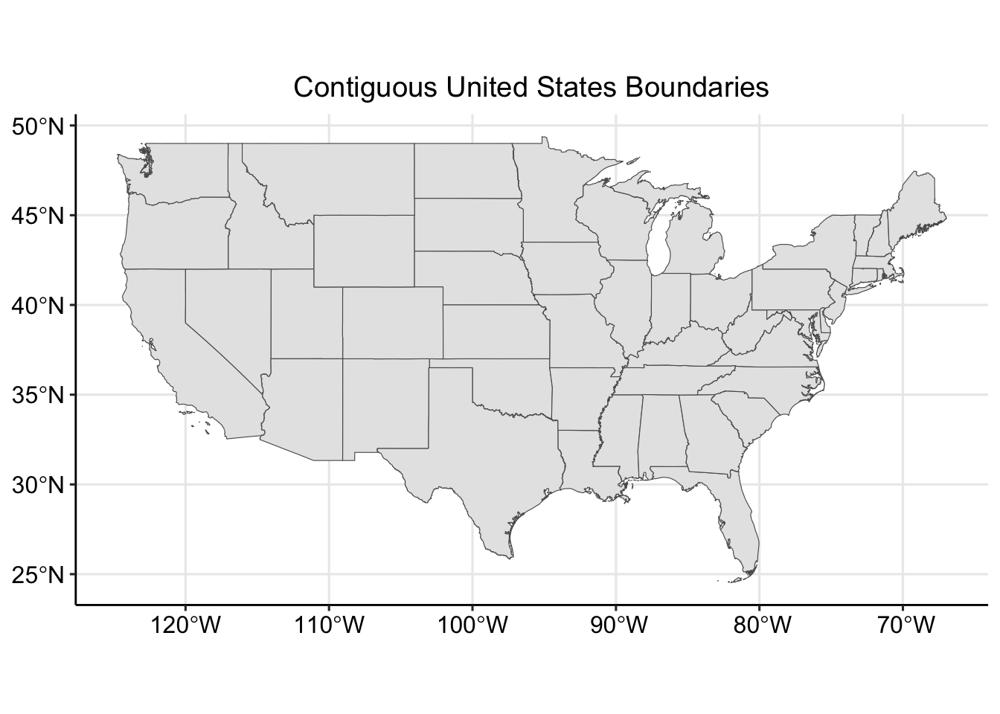
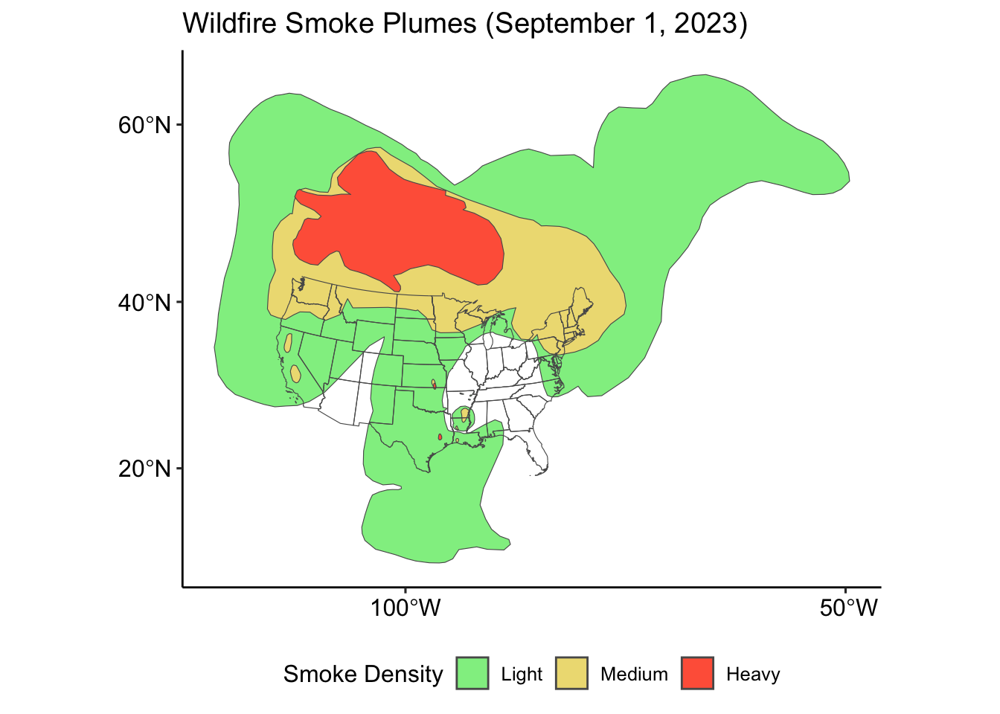
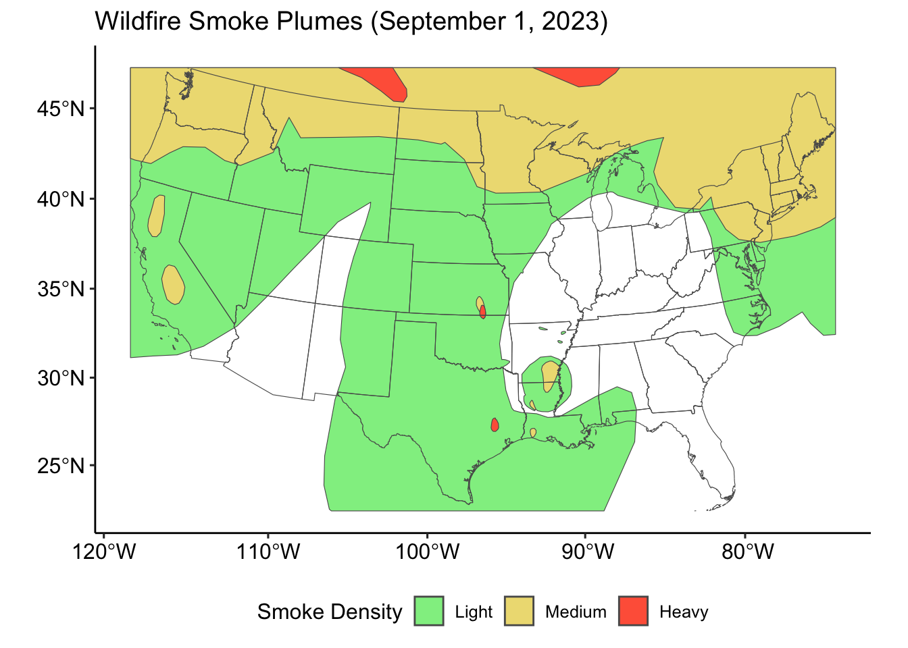
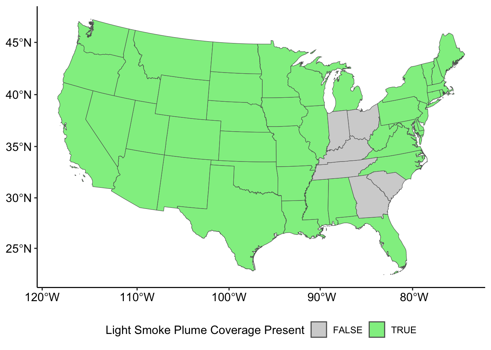
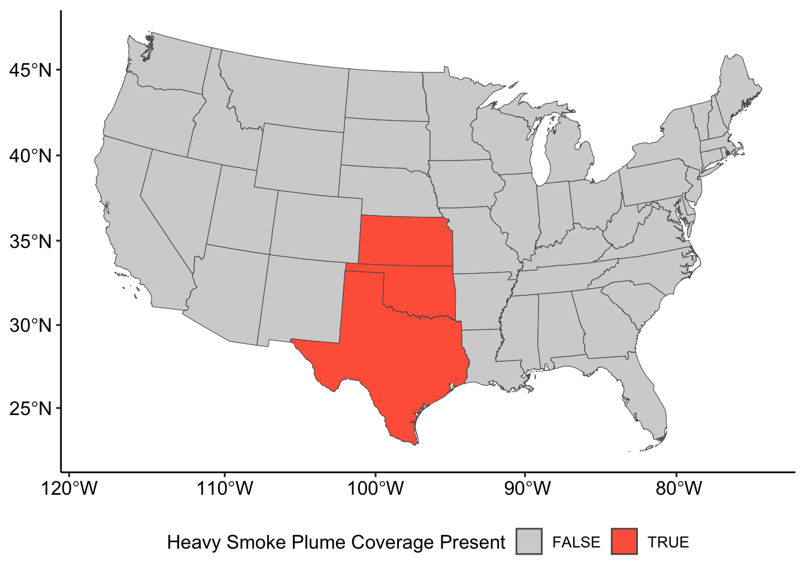

# may require R to restart
vignette_packages <- c("sf","terra", "ggplot2", "ggpubr",
"dplyr", "exactextractr", "sftime",
"stars", "tidyterra")
for(v in 1:length(vignette_packages)){
if (vignette_packages[v] %in% installed.packages() == FALSE){
install.packages(vignette_packages[v])
}
}
library(sf); library(terra); library(ggplot2); library(ggpubr);
library(dplyr); library(exactextractr); library(sftime); library(stars);
library(tidyterra)Intro-Environmental-Spatial-Analysis
Introduction to Spatial Analysis with Environmental Data
Environmental research relies on various types of spatial, temporal, and spatio-temporal data to accurately measure, predict, and model exposures.
This vignette will introduce packages equipped to handle the various types of data often used in environmental research, will teach how to load/read each type of data into R, and how to perform simple/basic/primary analyses.
Notes
This vignette outline was developed without detailed text explaining the reasoning for each step in the exploratory analyses.
Data
This vignette utilizes various free and publicly available spatial data sets. Access to individual files is included in the code, but a high level description of each data set can be located for the following sources.
| Data | Producer | Link |
|---|---|---|
| PM2.5 Daily Observations | Environmental Protection Agency (EPA) | https://aqs.epa.gov/aqsweb/airdata/download_files.html |
| HMS Fire and Smoke Product | National Oceanic and Atmospheric Administration (NOAA) | https://www.ospo.noaa.gov/Products/land/hms.html |
| United States Cartographic Boundary | United States Census Bureau | https://www.census.gov/geographies/mapping-files/time-series/geo/carto-boundary-file.html |
| RASTER DATA PLACEHOLDER | RASTER DATA PLACEHOLDER | RASTER DATA PLACEHOLDER |
0. Introduction
Download and Load Packages
1. Point Data with sf
1.0 Access and download
Set link to data access URL and specify saving location.
# specify the URL where data is stored
url_epa <- "https://aqs.epa.gov/aqsweb/airdata/daily_88101_2021.zip"
# specify where to save downloaded data
destination_epa <- "/ YOUR FILE PATH /epa_data.zip"
# download the data
download.file(url_epa,
destination_epa)Unzip downloaded zip files.
unzip("/ YOUR FILE PATH /epa_data.zip")Identify file name.
list.files("/ YOUR FILE PATH /") [1] "cb_2018_us_state_500k.cpg"
[2] "cb_2018_us_state_500k.dbf"
[3] "cb_2018_us_state_500k.prj"
[4] "cb_2018_us_state_500k.shp"
[5] "cb_2018_us_state_500k.shp.ea.iso.xml"
[6] "cb_2018_us_state_500k.shp.iso.xml"
[7] "cb_2018_us_state_500k.shx"
[8] "daily_88101_2021.csv"
[9] "epa_data.zip"
[10] "hms_smoke20230901.dbf"
[11] "hms_smoke20230901.prj"
[12] "hms_smoke20230901.shp"
[13] "hms_smoke20230901.shx"
[14] "noaa_smoke20230901.zip"
[15] "states.zip" 1.1 Import data with sf::st_read()
pm <- st_read("/ YOUR FILE PATH /daily_88101_2021.csv")Warning: no simple feature geometries present: returning a data.frame or tbl_df1.2 Inspect contents
str(pm)'data.frame': 590208 obs. of 29 variables:
$ State.Code : chr "01" "01" "01" "01" ...
$ County.Code : chr "003" "003" "003" "003" ...
$ Site.Num : chr "0010" "0010" "0010" "0010" ...
$ Parameter.Code : chr "88101" "88101" "88101" "88101" ...
$ POC : chr "1" "1" "1" "1" ...
$ Latitude : chr "30.497478" "30.497478" "30.497478" "30.497478" ...
$ Longitude : chr "-87.880258" "-87.880258" "-87.880258" "-87.880258" ...
$ Datum : chr "NAD83" "NAD83" "NAD83" "NAD83" ...
$ Parameter.Name : chr "PM2.5 - Local Conditions" "PM2.5 - Local Conditions" "PM2.5 - Local Conditions" "PM2.5 - Local Conditions" ...
$ Sample.Duration : chr "24 HOUR" "24 HOUR" "24 HOUR" "24 HOUR" ...
$ Pollutant.Standard : chr "PM25 24-hour 2012" "PM25 24-hour 2012" "PM25 24-hour 2012" "PM25 24-hour 2012" ...
$ Date.Local : chr "2021-01-01" "2021-01-07" "2021-01-13" "2021-01-16" ...
$ Units.of.Measure : chr "Micrograms/cubic meter (LC)" "Micrograms/cubic meter (LC)" "Micrograms/cubic meter (LC)" "Micrograms/cubic meter (LC)" ...
$ Event.Type : chr "None" "None" "None" "None" ...
$ Observation.Count : chr "1" "1" "1" "1" ...
$ Observation.Percent: chr "100.0" "100.0" "100.0" "100.0" ...
$ Arithmetic.Mean : chr "6.4" "5.7" "11" "5.1" ...
$ X1st.Max.Value : chr "6.4" "5.7" "11" "5.1" ...
$ X1st.Max.Hour : chr "0" "0" "0" "0" ...
$ AQI : chr "27" "24" "46" "21" ...
$ Method.Code : chr "145" "145" "145" "145" ...
$ Method.Name : chr "R & P Model 2025 PM-2.5 Sequential Air Sampler w/VSCC - Gravimetric" "R & P Model 2025 PM-2.5 Sequential Air Sampler w/VSCC - Gravimetric" "R & P Model 2025 PM-2.5 Sequential Air Sampler w/VSCC - Gravimetric" "R & P Model 2025 PM-2.5 Sequential Air Sampler w/VSCC - Gravimetric" ...
$ Local.Site.Name : chr "FAIRHOPE, Alabama" "FAIRHOPE, Alabama" "FAIRHOPE, Alabama" "FAIRHOPE, Alabama" ...
$ Address : chr "FAIRHOPE HIGH SCHOOL, 1 PIRATE DRIVE, FAIRHOPE, ALABAMA" "FAIRHOPE HIGH SCHOOL, 1 PIRATE DRIVE, FAIRHOPE, ALABAMA" "FAIRHOPE HIGH SCHOOL, 1 PIRATE DRIVE, FAIRHOPE, ALABAMA" "FAIRHOPE HIGH SCHOOL, 1 PIRATE DRIVE, FAIRHOPE, ALABAMA" ...
$ State.Name : chr "Alabama" "Alabama" "Alabama" "Alabama" ...
$ County.Name : chr "Baldwin" "Baldwin" "Baldwin" "Baldwin" ...
$ City.Name : chr "Fairhope" "Fairhope" "Fairhope" "Fairhope" ...
$ CBSA.Name : chr "Daphne-Fairhope-Foley, AL" "Daphne-Fairhope-Foley, AL" "Daphne-Fairhope-Foley, AL" "Daphne-Fairhope-Foley, AL" ...
$ Date.of.Last.Change: chr "2022-04-21" "2022-04-21" "2022-04-21" "2022-04-21" ...1.3 Subset to parameters of interest
pm <- subset(pm, select=c(State.Code,
County.Code,
Site.Num,
Latitude,
Longitude,
State.Name,
Date.Local,
Arithmetic.Mean))
str(pm)'data.frame': 590208 obs. of 8 variables:
$ State.Code : chr "01" "01" "01" "01" ...
$ County.Code : chr "003" "003" "003" "003" ...
$ Site.Num : chr "0010" "0010" "0010" "0010" ...
$ Latitude : chr "30.497478" "30.497478" "30.497478" "30.497478" ...
$ Longitude : chr "-87.880258" "-87.880258" "-87.880258" "-87.880258" ...
$ State.Name : chr "Alabama" "Alabama" "Alabama" "Alabama" ...
$ Date.Local : chr "2021-01-01" "2021-01-07" "2021-01-13" "2021-01-16" ...
$ Arithmetic.Mean: chr "6.4" "5.7" "11" "5.1" ...1.4 Reclassify parameters of interest
pm$Date.Local <- as.Date(pm$Date.Local)
pm$Arithmetic.Mean <- as.numeric(pm$Arithmetic.Mean)1.4.1 Ensure proper reclassification
class(pm$Date.Local); class(pm$Arithmetic.Mean)[1] "Date"[1] "numeric"1.5 Convert data frame to sf object
pm_sf <- st_as_sf(pm,
coords=c("Longitude", "Latitude"))1.5.1 Check class of pm_sf
class(pm_sf); class(pm_sf$geometry)[1] "sf" "data.frame"[1] "sfc_POINT" "sfc" 1.6 Check coordinate reference system
st_crs(pm_sf)Coordinate Reference System: NA1.6.1 Set coordinate reference system
st_crs(pm_sf) <- "EPSG:4326"
st_crs(pm_sf)Coordinate Reference System:
User input: EPSG:4326
wkt:
GEOGCRS["WGS 84",
ENSEMBLE["World Geodetic System 1984 ensemble",
MEMBER["World Geodetic System 1984 (Transit)"],
MEMBER["World Geodetic System 1984 (G730)"],
MEMBER["World Geodetic System 1984 (G873)"],
MEMBER["World Geodetic System 1984 (G1150)"],
MEMBER["World Geodetic System 1984 (G1674)"],
MEMBER["World Geodetic System 1984 (G1762)"],
MEMBER["World Geodetic System 1984 (G2139)"],
ELLIPSOID["WGS 84",6378137,298.257223563,
LENGTHUNIT["metre",1]],
ENSEMBLEACCURACY[2.0]],
PRIMEM["Greenwich",0,
ANGLEUNIT["degree",0.0174532925199433]],
CS[ellipsoidal,2],
AXIS["geodetic latitude (Lat)",north,
ORDER[1],
ANGLEUNIT["degree",0.0174532925199433]],
AXIS["geodetic longitude (Lon)",east,
ORDER[2],
ANGLEUNIT["degree",0.0174532925199433]],
USAGE[
SCOPE["Horizontal component of 3D system."],
AREA["World."],
BBOX[-90,-180,90,180]],
ID["EPSG",4326]]1.7 Plot point locations with ggplot2
ggplot()+
geom_sf(data=pm_sf)+
ggtitle("EPA PM2.5 Monitoring Locations (2021)")+
theme_pubr()+
grids()
1.8 Inspect parameter of interest
summary(pm_sf$Arithmetic.Mean); sd(pm_sf$Arithmetic.Mean) Min. 1st Qu. Median Mean 3rd Qu. Max.
-6.500 4.700 7.100 8.615 10.500 556.778 [1] 7.366881.8.1 Plot distribution of parameter of interest
ggplot(data=pm_sf,
aes(Arithmetic.Mean))+
geom_histogram(binwidth = 5)+
ggtitle("EPA PM2.5 Measurements (2021)")+
xlab("PM2.5 Concentration")+
ylab("Number of Measurements")+
theme_pubr()
1.9 Create monitor identification code
pm_sf$Monitor.ID <- paste0(pm_sf$State.Code,
pm_sf$County.Code,
pm_sf$Site.Num)1.9.1 Check the number of unique monitor codes
length(unique(pm_sf$Monitor.ID))==length(unique(pm_sf$geometry))[1] TRUE1.10 Calculate annual mean concentration for monitor locations
pm_mean <-
pm_sf %>%
group_by(Monitor.ID, State.Name) %>%
summarise(Annual.Mean=mean(Arithmetic.Mean))1.11 Plot annual mean concentrations
ggplot()+
geom_sf(data=pm_mean,
aes(color=Annual.Mean))+
scale_color_viridis_b(expression("PM2.5 Concentration (µg/m"^3*")"))+
ggtitle("Annual Mean PM2.5 Concentration at EPA Monitoring Locations")+
theme_pubr(legend="right")+
grids()
1.12 Explore monitors with highest mean concentrations
1.12.1 Identify three monitors with highest concentrations
max_monitors <-
pm_mean %>%
arrange(Annual.Mean) %>%
tail(n=3)1.12.2 Create variable with these monitors’ monitor IDs
max_monitors_id <- max_monitors$Monitor.ID1.12.3 Create subset of data with only these monitors
pm_max <- subset(pm_sf,
subset=Monitor.ID==max_monitors_id)1.12.4 Plot time trend of observations at these monitor locations
ggplot(data=pm_max,
aes(x=Date.Local,
y=Arithmetic.Mean,
group=Monitor.ID,
color=Monitor.ID))+
geom_line()+
ggtitle("Highest Annual Mean Concentrations of PM2.5")+
facet_wrap(~Monitor.ID,
nrow = 3)+
xlab("Date")+
ylab(expression("PM2.5 Concentration (µg/m"^3*")"))+
theme_pubr(legend = "right")
1.12.5 Box plot to compare observations at these monitor locations
ggplot(data=pm_max,
aes(x=Monitor.ID,
y=Arithmetic.Mean,
fill=Monitor.ID))+
geom_boxplot()+
xlab("Monitor ID")+
ylab(expression("PM2.5 Concentration (µg/m"^3*")"))+
theme_pubr(legend="none")
============= BREAK ==============
2. Polygon Data
2.0 Access and download
Define day, year, and month of interest
day = "01"
month = "09"
year = "2023"Set link to data access URL and specify saving location.
# specify the URL where data is stored based on date variables of interest
url_noaa <- paste0("https://satepsanone.nesdis.noaa.gov/pub/FIRE/web/HMS/Smoke_Polygons/Shapefile/",
year,
"/",
month,
"/hms_smoke",
year,
month,
day,
".zip")
# specify where to save downloaded data
destination_noaa <- paste0("/ YOUR FILE PATH /noaa_smoke",
year,
month,
day,
".zip")
# download the data
download.file(url_noaa,
destination_noaa)Unzip downloaded file.
unzip("/ YOUR FILE PATH /noaa_smoke20230901.zip")Identify file name.
list.files("/ YOUR FILE PATH /") [1] "cb_2018_us_state_500k.cpg"
[2] "cb_2018_us_state_500k.dbf"
[3] "cb_2018_us_state_500k.prj"
[4] "cb_2018_us_state_500k.shp"
[5] "cb_2018_us_state_500k.shp.ea.iso.xml"
[6] "cb_2018_us_state_500k.shp.iso.xml"
[7] "cb_2018_us_state_500k.shx"
[8] "daily_88101_2021.csv"
[9] "epa_data.zip"
[10] "hms_smoke20230901.dbf"
[11] "hms_smoke20230901.prj"
[12] "hms_smoke20230901.shp"
[13] "hms_smoke20230901.shx"
[14] "noaa_smoke20230901.zip"
[15] "states.zip" 2.1 Polygon data with sf
2.1.1 Import
smoke <- st_read("/ YOUR FILE PATH /hms_smoke20230901.shp")2.1.2 Inspect contents
str(smoke); st_crs(smoke)Classes 'sf' and 'data.frame': 58 obs. of 5 variables:
$ Satellite: chr "GOES-EAST" "GOES-EAST" "GOES-EAST" "GOES-EAST" ...
$ Start : chr "2023244 0900" "2023244 1300" "2023244 1300" "2023244 1300" ...
$ End : chr "2023244 1300" "2023244 1700" "2023244 1700" "2023244 1700" ...
$ Density : chr "Light" "Light" "Light" "Light" ...
$ geometry :sfc_POLYGON of length 58; first list element: List of 1
..$ : num [1:211, 1:2] -51.4 -48.8 -46.4 -45.1 -42.8 ...
..- attr(*, "class")= chr [1:3] "XY" "POLYGON" "sfg"
- attr(*, "sf_column")= chr "geometry"
- attr(*, "agr")= Factor w/ 3 levels "constant","aggregate",..: NA NA NA NA
..- attr(*, "names")= chr [1:4] "Satellite" "Start" "End" "Density"Coordinate Reference System:
User input: WGS 84
wkt:
GEOGCRS["WGS 84",
DATUM["World Geodetic System 1984",
ELLIPSOID["WGS 84",6378137,298.257223563,
LENGTHUNIT["metre",1]]],
PRIMEM["Greenwich",0,
ANGLEUNIT["degree",0.0174532925199433]],
CS[ellipsoidal,2],
AXIS["latitude",north,
ORDER[1],
ANGLEUNIT["degree",0.0174532925199433]],
AXIS["longitude",east,
ORDER[2],
ANGLEUNIT["degree",0.0174532925199433]],
ID["EPSG",4326]]2.1.3 Inspect parameter of interest
unique(smoke$Density); class(smoke$Density)[1] "Light" "Medium" "Heavy" [1] "character"2.1.4 Reclassify parameter of interest
smoke$Density <- factor(smoke$Density,
levels=c("Light", "Medium", "Heavy"))2.1.5 Plot polygons with ggplot2
ggplot()+
geom_sf(data=smoke,
aes(fill=Density))+
scale_fill_manual("Smoke Density",
values=c("lightgreen", "lightgoldenrod", "tomato"))+
ggtitle("Wildfire Smoke Plumes (September 1, 2023)")+
theme_pubr(legend="bottom")
2.1.6 Combine polygons based on density classification
Create variable with density types.
dens <- unique(smoke$Density)Union polygons by density type with new date column.
smoke_density <-
smoke %>%
group_by(Density) %>%
summarise(geometry=st_union(geometry),
Date=paste0(year,
month,
day))Plot union-ed polygons.
ggplot()+
geom_sf(data=smoke_density,
aes(fill=Density))+
scale_fill_manual("Smoke Density",
values=c("lightgreen", "lightgoldenrod", "tomato"))+
ggtitle("Wildfire Smoke Plumes (September 1, 2023)")+
theme_pubr(legend="bottom")2.1.6 Import United States state boundary polygon data
Set link to data access URL and specify saving location.
# specify the URL where data is stored
url_states <- "https://www2.census.gov/geo/tiger/GENZ2018/shp/cb_2018_us_state_500k.zip"
# specify where to save downloaded data
destination_states <- "/ YOUR FILE PATH /states.zip"
# download the data
download.file(url_states,
destination_states)Unzip downloaded data.
unzip("/ YOUR FILE PATH /states.zip")Identify file name.
list.files("/ YOUR FILE PATH /") [1] "cb_2018_us_state_500k.cpg"
[2] "cb_2018_us_state_500k.dbf"
[3] "cb_2018_us_state_500k.prj"
[4] "cb_2018_us_state_500k.shp"
[5] "cb_2018_us_state_500k.shp.ea.iso.xml"
[6] "cb_2018_us_state_500k.shp.iso.xml"
[7] "cb_2018_us_state_500k.shx"
[8] "daily_88101_2021.csv"
[9] "epa_data.zip"
[10] "hms_smoke20230901.dbf"
[11] "hms_smoke20230901.prj"
[12] "hms_smoke20230901.shp"
[13] "hms_smoke20230901.shx"
[14] "noaa_smoke20230901.zip"
[15] "states.zip" Import data.
states <- st_read("/ YOUR FILE PATH /cb_2018_us_state.shp")Inspect United States polygons.
str(states); st_crs(states)Classes 'sf' and 'data.frame': 56 obs. of 10 variables:
$ STATEFP : chr "28" "37" "40" "51" ...
$ STATENS : chr "01779790" "01027616" "01102857" "01779803" ...
$ AFFGEOID: chr "0400000US28" "0400000US37" "0400000US40" "0400000US51" ...
$ GEOID : chr "28" "37" "40" "51" ...
$ STUSPS : chr "MS" "NC" "OK" "VA" ...
$ NAME : chr "Mississippi" "North Carolina" "Oklahoma" "Virginia" ...
$ LSAD : chr "00" "00" "00" "00" ...
$ ALAND : num 1.22e+11 1.26e+11 1.78e+11 1.02e+11 6.23e+10 ...
$ AWATER : num 3.93e+09 1.35e+10 3.37e+09 8.53e+09 4.89e+08 ...
$ geometry:sfc_MULTIPOLYGON of length 56; first list element: List of 8
..$ :List of 1
.. ..$ : num [1:16, 1:2] -88.5 -88.5 -88.5 -88.5 -88.4 ...
..$ :List of 1
.. ..$ : num [1:27, 1:2] -88.6 -88.6 -88.6 -88.6 -88.6 ...
..$ :List of 1
.. ..$ : num [1:27, 1:2] -88.8 -88.8 -88.7 -88.7 -88.7 ...
..$ :List of 1
.. ..$ : num [1:19, 1:2] -88.9 -88.9 -88.9 -88.9 -88.8 ...
..$ :List of 1
.. ..$ : num [1:8, 1:2] -88.9 -88.9 -88.9 -88.9 -88.9 ...
..$ :List of 1
.. ..$ : num [1:12, 1:2] -89 -89 -89 -89 -89 ...
..$ :List of 1
.. ..$ : num [1:27, 1:2] -89.1 -89.1 -89.1 -89.1 -89.1 ...
..$ :List of 1
.. ..$ : num [1:2713, 1:2] -91.7 -91.7 -91.7 -91.6 -91.6 ...
..- attr(*, "class")= chr [1:3] "XY" "MULTIPOLYGON" "sfg"
- attr(*, "sf_column")= chr "geometry"
- attr(*, "agr")= Factor w/ 3 levels "constant","aggregate",..: NA NA NA NA NA NA NA NA NA
..- attr(*, "names")= chr [1:9] "STATEFP" "STATENS" "AFFGEOID" "GEOID" ...Coordinate Reference System:
User input: NAD83
wkt:
GEOGCRS["NAD83",
DATUM["North American Datum 1983",
ELLIPSOID["GRS 1980",6378137,298.257222101,
LENGTHUNIT["metre",1]]],
PRIMEM["Greenwich",0,
ANGLEUNIT["degree",0.0174532925199433]],
CS[ellipsoidal,2],
AXIS["latitude",north,
ORDER[1],
ANGLEUNIT["degree",0.0174532925199433]],
AXIS["longitude",east,
ORDER[2],
ANGLEUNIT["degree",0.0174532925199433]],
ID["EPSG",4269]]Subset to contiguous United States.
# define list of state and territories to be removed
remove <- c("Alaska",
"Hawaii",
"Puerto Rico",
"United States Virgin Islands",
"Commonwealth of the Northern Mariana Islands",
"Guam",
"American Samoa")
# remove states and territories
conus <- subset(states,
!NAME %in% remove)Plot contiguous United States boundaries.
ggplot()+
geom_sf(data=conus)+
ggtitle("Contiguous United States Boundaries")+
theme_pubr()
2.1.7 Plot smoke plumes and state boundaries sf
Set matching coordinate reference systems.
st_crs(smoke_density) <- st_crs(conus)
st_crs(smoke_density)==st_crs(conus)[1] TRUESet matching projections (Albers Equal Area).
smoke_density <- st_transform(smoke_density,
5070)
conus <- st_transform(conus,
5070)Create plot.
ggplot()+
geom_sf(data=smoke_density,
aes(fill=Density))+
scale_fill_manual("Smoke Density",
values=c("lightgreen", "lightgoldenrod", "tomato"))+
geom_sf(data=conus,
fill="transparent")+
ggtitle("Wildfire Smoke Plumes (September 1, 2023)")+
theme_pubr(legend="bottom")
2.1.8 Crop smoke polygons to contiguous United States bounding box
smoke_crop <- st_crop(smoke_density,
conus)2.1.9 Plot cropped smoke polygons.
ggplot()+
geom_sf(data=smoke_crop,
aes(fill=Density))+
scale_fill_manual("Smoke Density",
values=c("lightgreen", "lightgoldenrod", "tomato"))+
geom_sf(data=conus,
fill="transparent")+
ggtitle("Wildfire Smoke Plumes (September 1, 2023)")+
theme_pubr(legend="bottom")
============= BREAK ==============
2.2 Polygon data with terra
2.2.0 Access and download same as with sf
2.2.1 Import (wildfire and boundary data)
smoke_t <- vect("/ YOUR FILE PATH /hms_smoke20230901.shp")
states_t <- vect("/ YOUR FILE PATH /cb_2018_us_state_500k.shp")2.2.2 Inspect contents
str(smoke_t); str(states_t)S4 class 'SpatVector' [package "terra"]S4 class 'SpatVector' [package "terra"]2.2.3 Set up parameters of interest
smoke_t$Density <- factor(smoke_t$Density,
levels=c("Light", "Medium", "Heavy"))
conus_t <- subset(states_t,
!states_t$NAME %in% remove)2.2.4 Set matching coordinate reference systems and projections
crs(smoke_t) <- crs(conus_t)
smoke_t <- project(smoke_t,
"EPSG:5070")
conus_t <- project(conus_t,
"EPSG:5070")2.2.5 Combine polygons based on density classification
smoke_density_t <- terra::aggregate(smoke_t,
by="Density",
dissolve=TRUE)New smoke_density_t is SpatVector with 3 geometries.
smoke_density_t class : SpatVector
geometry : polygons
dimensions : 3, 5 (geometries, attributes)
extent : -3260097, 5993172, -1003068, 6112717 (xmin, xmax, ymin, ymax)
coord. ref. : NAD83 / Conus Albers (EPSG:5070)
names : Density Satellite Start End agg_n
type : <fact> <chr> <logical> <logical> <int>
values : Light GOES-EAST <NA> <NA> 37
Medium GOES-EAST <NA> <NA> 15
Heavy GOES-EAST <NA> <NA> 62.2.6 Plot smoke plumes and state boundaries terra
ggplot()+
geom_spatvector(data=smoke_density_t,
aes(fill=Density))+
scale_fill_manual("Smoke Density",
values=c("lightgreen", "lightgoldenrod", "tomato"))+
geom_spatvector(data=conus_t,
fill="transparent")+
ggtitle("Wildfire Smoke Plumes (September 1, 2023)")+
theme_pubr(legend="bottom")2.2.7 Identify presence of smoke plumes in each state
Identify where smoke polygons intersect state boundaries.
conus_smoke <- data.frame(t(relate(smoke_density_t,
conus_t,
relation="intersects")))Set column names to match density type.
colnames(conus_smoke) <- c("Light", "Medium", "Heavy")Combine smoke plume coverage presence with state boundaries.
conus_t <- cbind(conus_t,
conus_smoke)2.2.8 Compare presence of smoke plume coverage across states
New variable with smoke density classifications as character.
dens_c <- c("Light", "Medium", "Heavy")For loop creating identification plots for each density type.
for(d in 1:length(dens_c)){
# define color palette based on smoke density
if(dens_c[d]=="Light"){
color_values <- c("lightgrey", "lightgreen")
} else if(dens_c[d]=="Medium"){
color_values <- c("lightgrey", "lightgoldenrod")
} else if(dens_c[d]=="Heavy"){
color_values <- c("lightgrey", "tomato")
}
print(
ggplot()+
geom_spatvector(data=conus_t,
aes_string(fill=dens_c[d]))+
scale_fill_manual(paste0(dens_c[d],
" Smoke Plume Coverage Present"),
values=color_values)+
theme_pubr(legend="bottom")
)
}

